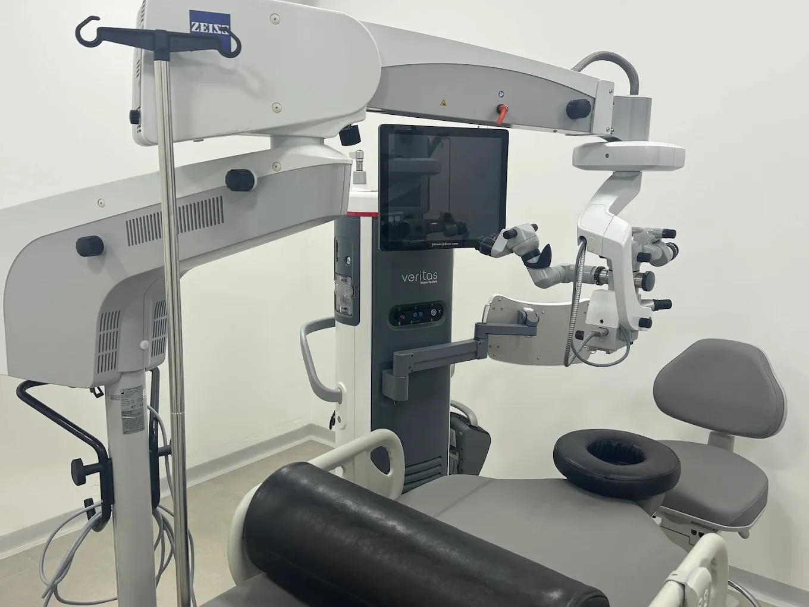

Vista embaçada? Antes de trocar de óculos mais uma vez, assista a este vídeo.
O Dr. Paulo Igor Rauen explica, em palavras simples, o que é a catarata, qual é a hora de operar e como é a cirurgia hoje. Vale para você e para quem cuida de um pai ou de uma mãe.

O vídeo tem som. Se preferir ler, o mesmo conteúdo está explicado logo abaixo.
Veja como a catarata muda o que você enxerga.
A catarata é a perda de transparência do cristalino, a lente natural do olho. Ela costuma avançar devagar, e a pessoa se acostuma sem perceber o quanto perdeu. Arraste o controle e compare.
Imagem criada para explicar os sintomas. Cada pessoa percebe a catarata de um jeito, e só o exame oftalmológico confirma o diagnóstico.
Seis sinais que aparecem no dia a dia.
Se você, ou alguém da sua família, percebe alguns deles, é hora de uma avaliação completa dos olhos.
- Visão embaçada, como um vidro foscoUma neblina constante, que limpar os óculos não resolve.
- Faróis e sol forte incomodamAs luzes ganham halos e ofuscam, principalmente à noite.
- Cores apagadas ou amareladasO branco fica bege, e as cores perdem o brilho aos poucos.
- Troca de óculos que não resolveO grau muda várias vezes, e os óculos novos param de ajudar.
- Dificuldade para dirigir à noiteDirigir no escuro fica cansativo e inseguro.
- Precisa de mais luz para lerLer a bula, o celular ou costurar exige uma luz cada vez mais forte.
Três ideias antigas que fazem muita gente esperar demais.
Quase todo mundo que chega com catarata já ouviu pelo menos uma delas. Vale entender o que mudou.
- “É só trocar o grau dos óculos.”Óculos não clareiam um cristalino opaco.
No começo, o grau novo ajuda um pouco. Depois de certo ponto, nenhuma lente de óculos resolve, porque o embaçado está dentro do olho.
- “Tem que esperar a catarata amadurecer.”Hoje, a hora de operar é quando a catarata começa a atrapalhar a sua vida.
Essa ideia vem de uma época em que a cirurgia era diferente. Com a técnica atual, esperar demais pode até deixar a cirurgia mais difícil.
- “Na minha idade, não vale mais a pena.”Idade, sozinha, não impede a cirurgia.
O que pesa é a saúde geral e a saúde do olho, avaliadas na consulta. Muita gente opera depois dos 70 e dos 80 anos para continuar lendo, saindo e cuidando de si.
Catarata operada por quem também é especialista em retina.
Atrás da catarata está a retina, e ela precisa estar saudável para a visão responder bem. Por isso o cuidado começa antes da cirurgia.
| Como é feito | O que isso muda para você |
|---|---|
| Exame do fundo do olho antes de operar | Alterações da retina são vistas antes da cirurgia, e não descobertas depois dela. |
| Biometria e planejamento da lente | A lente é escolhida pelas medidas do seu olho e pela sua rotina, não por um padrão. |
| Atenção especial a diabetes e alta miopia | Quem tem mais risco na retina recebe um planejamento feito para o seu caso. |
| Explicação de cada etapa, com prós e contras | Você e a sua família decidem sabendo o que esperar. |
| Atendimento em três cidades | Menos estrada para você e para quem te acompanha nas consultas. |

Como é a cirurgia, do começo ao fim.
A cirurgia troca o cristalino opaco por uma lente transparente. É um dos procedimentos mais realizados e mais estudados da medicina. Você volta para casa no mesmo dia.
- Avaliação e medidas do olhoExame completo e biometria, a medida de precisão que serve para planejar a lente do seu olho.
- FacoemulsificaçãoPor uma abertura muito pequena, o cristalino opaco é desfeito por ultrassom e retirado. A anestesia é feita com colírios, e a grande maioria dos pacientes não sente dor.
- Lente intraocularA lente escolhida é colocada no lugar do cristalino. Na maioria dos casos, sem pontos.
- Recuperação acompanhadaColírios por algumas semanas e volta gradual às atividades, com retornos para acompanhar a evolução.
A lente certa depende do seu olho e da sua rotina.
A escolha considera as medidas do olho, a saúde da retina e o que você mais faz no dia a dia. Tudo é explicado na consulta, com os pontos a favor e contra de cada opção.
Monofocal
Foco nítido em uma distância, em geral para longe. É a opção mais tradicional. Óculos para perto costumam ser necessários.
Tórica
Corrige também o astigmatismo, o que reduz a dependência de óculos para longe.
Multifocal ou de foco estendido
Amplia a faixa de visão, para longe e para perto, buscando mais independência dos óculos. Só é indicada quando o olho é bom candidato.
Às vezes, a resposta é “essa lente não é para o seu caso”. Doenças da retina, por exemplo, podem mudar a escolha. Por isso a avaliação do fundo do olho vem antes da decisão.

Quem vai cuidar da sua cirurgia.
São mais de 15 anos de prática e mais de 15 mil cirurgias de retina e catarata. O Dr. Paulo explica cada etapa com calma, para você e para quem te acompanha, e segue de perto a sua recuperação.
Quem tem diabetes, alta miopia ou alguma doença do fundo do olho encontra aqui o olhar de um especialista em retina desde a primeira consulta.
- MedicinaUniversidade Federal de Santa Maria (RS)
- Residência em OftalmologiaHospital dos Olhos de Londrina
- Especialização em vítreo e catarataFormação cirúrgica
- Retina clínica e cirúrgicaUSP de Ribeirão Preto
- Título de especialista em retinaRegistro de Qualificação de Especialista
Salvando vistas, transformando vidas.
O que os pacientes contam.
Avaliações reais, publicadas no Google por pacientes e familiares.
É hora de avaliar a sua catarata?
Marque o que você tem notado. Não é um diagnóstico. É um ponto de partida para conversar com um oftalmologista.
Marque os sinais. O índice mostra o quanto vale a pena agendar uma avaliação da sua visão.
Esta autoavaliação tem caráter apenas informativo e não substitui a consulta médica. O diagnóstico da catarata depende de exame oftalmológico presencial.
Avaliação de catarata com o Dr. Paulo.
Uma consulta para entender, com calma, se a catarata já está atrapalhando e qual é o melhor momento para tratar. Você pode vir acompanhado, e quem cuida de um familiar pode agendar por ele.
- Conversa sobre o que você sente e o que mais faz no dia a dia
- Exame completo dos olhos, incluindo o fundo do olho e a retina
- Exames complementares, como a biometria, quando forem indicados
- Explicação do diagnóstico e das opções de lente, com prós e contras
- Orientação clara sobre os próximos passos
Como agendar a sua avaliação.
- Chame no WhatsAppConte o que você, ou o seu familiar, está sentindo. A equipe informa datas, valores e o que levar.
- Escolha a cidade e o diaUmuarama, Campo Mourão ou Palotina. Quem acompanha um familiar pode agendar por ele.
- Faça a avaliaçãoExame completo dos olhos, incluindo a retina. Você sai da consulta entendendo o seu caso e os próximos passos.
Chamar a equipe no WhatsApp Ou ligue: (44) 99123-0861. Segunda a sexta, 8h às 18h. Sábado, 8h às 13h.
 UmuaramaHospital OftaVitta
UmuaramaHospital OftaVitta
Av. Celso Garcia Cid, 3542, 2º e 3º andar Campo MourãoOrbe Hospital de Olhos
Campo MourãoOrbe Hospital de Olhos
Av. Manoel Mendes de Camargo, 2331, Centro PalotinaClarus Oftalmologia
PalotinaClarus Oftalmologia
Av. Independência, 486, Centro
As datas de atendimento variam por cidade. Confirme a próxima data pelo WhatsApp antes de se deslocar.
Dúvidas comuns sobre a cirurgia.
A cirurgia de catarata dói?
Na grande maioria dos casos, não. A anestesia é feita com colírios, às vezes com uma sedação leve. O paciente costuma sentir apenas uma leve pressão. O procedimento é rápido, e você volta para casa no mesmo dia.
Toda vista embaçada é catarata?
Não. Grau desatualizado, olho seco e doenças da retina também embaçam a visão. Por isso a avaliação vem antes de qualquer decisão. Se não for catarata, você sai da consulta sabendo o que é e como tratar.
Preciso esperar a catarata amadurecer?
Não. Isso é uma ideia de décadas atrás. Com a técnica atual, a cirurgia é indicada quando a catarata começa a atrapalhar a sua qualidade de vida. Esperar demais pode tornar a cirurgia mais difícil.
Quanto tempo leva a cirurgia e a recuperação?
O procedimento em si é rápido, em geral questão de minutos por olho, variando conforme o caso. A melhora da visão costuma ser percebida nos primeiros dias. Os colírios são usados por algumas semanas, e a volta às atividades é gradual, com orientação individual.
Os dois olhos são operados no mesmo dia?
Em geral, opera-se um olho de cada vez, com um intervalo curto entre eles. Assim é possível acompanhar a recuperação do primeiro olho. A programação é definida na consulta.
Tenho diabetes. Posso operar?
Sim, mas o planejamento merece atenção especial. O diabetes pode afetar a retina, e o exame do fundo do olho antes da cirurgia é essencial. O Dr. Paulo é especialista em retina e faz essa avaliação na mesma consulta.
A catarata pode voltar?
A catarata em si não volta, porque o cristalino opaco foi substituído pela lente. Com o tempo, alguns pacientes têm uma opacificação da cápsula que sustenta a lente. Ela é tratada com uma aplicação rápida de laser no consultório.
Como funciona o agendamento, e quais são as formas de atendimento?
Pelo WhatsApp. A equipe informa as datas em cada cidade, as formas de atendimento disponíveis e o que levar no dia da consulta.
O primeiro passo é uma avaliação completa.
Se a vista embaçada está atrapalhando o seu dia a dia, ou o de alguém que você ama, converse com a equipe do Dr. Paulo.